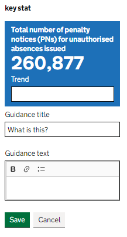

Things to consider when writing statistical commentary.
DfE publishes over 60 distinct Official Statistics collections each year, as well as numerous experimental and ad hoc releases.
The layout, structure, and length of these releases vary significantly across the Department - this is confusing for users and makes it hard to navigate across releases.
In many cases, our drafting is lengthy and overly-technical - again, this is confusing for users and out of line with best practice guidance on content design across Government.
Migration to a new statistics dissemination platform - Explore Education Statistics - presents an opportunity for us to systematically review and redesign our content to consistent and accessible standards.
Below is a session by Robert Cuffe from the BBC talking to DfE statisticians about writing our publications in a way they can be used by journalists and the media. The session is a mix of Robert talking about his experience, interactive elements and a question and answer session to round off. For the interactive tasks, you can follow along to help give you a sense of how journalists use our publications.
This guidance and the below checklist, co-produced with local statisticians, and supported by the Good Practice Team will build on ONS’s Best Practice guidance on Data Visualisation and Writing about Statistics. It is for producers of official statistics who want to create statistical bulletins that are informative, consistent across DfE, engaging and easy to understand.
A content checklist, which breaks down the components of producing Best Practice content into achievable pieces of work with supporting links to guidance can be found in our sharepoint folder.
Encourage people to follow agreed best practice. We want to co-produce with statistics producers an agreed set of best practice principles using a range of existing resources.
Help people tell the statistical story. It is our responsibility, as experts, to describe the patterns and trends in our statistics objectively in a way that is clearly and easy to understand to a range of audiences. It is our role to give insight and show users what the numbers mean and convey the important messages appropriately.
Improve consistency across DfE. Developing best practice standards and adhering to those standards will promote quality products that users will find useful.
Statistical Commentary. This section is where your numbers come to life, it’s more than a simple description of the data, but a chance to help users understand the meaning of patterns, trends and limitations, and build on any factual and public information already known about the subject matter.
Data visualisation. To support points 2 to 4 above we need to maximise the use of tools to aid storytelling and provide a visual context for our users.
Through the aid of this guidance we want producers of official statistics to be aiming for Best Practice. However, it is important to be realistic about what can be achieved with the tools we have available and identifying where the gaps are whilst finding solutions to make the necessary improvements. This check list should help teams identify what more could be done to take them to achieve Best Practice. The Central Statistics and Standards Unit will be on hand to help with this process.
Further information on each point can be obtained from the GSS writing about Statistics: Guide for Producers.
People who write about statistics should seek to conduct a coherent statistical inquiry about the relationship between the concepts under study. When communicating this to a general audience, statisticians must explain the answers in words that the audience can understand. Unfortunately, few courses teach how to write a clear narrative linking numeric evidence to substantive questions, or how to present statistics in words that non-statisticians can comprehend easily. This can leave general audiences struggling to understand what questions those numbers are intended to answer or what conclusions they support. Below are some high-level questions/statements that producers of statistics can ask themselves to help write engaging and clear narrative:
This section illustrates some examples on how to write about your statistics by orientating the user to the purpose of the publication and summarising and pulling out key trends. Start by introducing the topic of your work and the questions you seek to answer with the numbers that follow. To help set the scene for your statistics, begin with a topic sentence that introduces the variables and the W’s (when, where and what).
Examples (NB. Fictional):
Poor: (No introductory sentence) “In 2020, there were 11,000 gun-related homicides (Figure 1)”
This jumps directly to presenting the data without orientating the reader to the topic and objectives.
Better: “What factors explain the observed rise and fall in overall homicides in England in the 2000s”
This uses a rhetorical question to introduce the context (where and when) and the pattern to be investigated (the time trend). However, this does not specify the possible explanatory factors.
Best: “Was the substantial rise and fall in the number of homicides in the 2000s in England (Figure 1) observed across all age groups and types of weapons (Figure 2)?” There have been no numbers presented yet, just a statement that establishes the purpose of the statistics. Introducing your topic is important especially when presenting a series of charts or tables.
Summarising patterns from tables and charts
Reporting the numbers you work with is an important first step toward writing effective numeric descriptions. By including numbers in text, table or chart, you give the user the raw materials with which to perform comparisons across time, places or groups. However, if you stop there, you leave it to your readers to figure out how those data answer the question at hand.
Poor: “In 2010, there were 20, 370 overall homicides related to crime, 13,000 which were related to gun incidents, 7,370 related to other weapons. In 2020, they were 18,900 overall homicides, 11,000 which were related to gun incidents, 9,900 related to other weapons (Figure 1)”.
The description above simply lists statistics from charts without explaining how they relate to one another or how the statistics address the initial question in the opening paragraph.
Better: “The total number of homicides rose until the mid-2000s and then declined until 2020. As shown in Figure 1, the increase and subsequent decrease in homicides were driven by trends in gun-related homicides. In 2020, there was roughly 1.5 times as many homicides were committed with guns as with other types of weapons (11,000 versus 7265; Figure 1); whereas in 2010, roughly 2 times as many homicides were committed with guns versus other weapons, 13000 and 6500, respectively. Figure 2 examines whether gun-related homicides showed the same time trend among all age groups. As shown in Figure 2 in the two youngest groups of offenders, gun-related homicides increased substantially between 2000 and 2010, and then decreased steadily until 2020. In contrast, the number of gun related homicides committed by older offenders decreased slowly throughout the time-period shown”.
Try to use prose to summarise the patterns so your user can see the general relationship in the table or chart – the forest not the individual trees. Try not to report every number from the table or chart or pick a few arbitrary numbers to contrast in sentence form without considering whether or not those numbers represent an underlying general pattern. Paint the big picture rather than reiterating all the little details. This will help you tell a clear story with numbers as evidence.
The layout of the new platform provides a natural template and enforces a base level of consistency, whilst leaving enough flexibility to meet the needs of a range of publications. All design aspects of this layout have been iteratively user-tested to ensure it’s as navigable, accessible, and understandable as possible.
Essentially, your release should have a headline statistics part, followed by up to 10 headered accordion sections, most releases are already structured this way in the PDFs.
Word templates for drafting the commentary, and for creating PDFs for the external metadata and pre-release-access list are saved on sharepoint.
Each release on the platform will have a summary box at the top that contains the top facts and headlines for your release - you should consider this the equivalent of the front page of what was the PDF version of your release.
It is recommended to have 3 headline statistics but you can have more or fewer. Key statistic tiles are split into the following elements.

| Element | Content |
|---|---|
| Indicator name | Automatically generated from your data |
| Latest value | Automatically generated from your data |
| Trend | A short one-sentence description of the trend; try to avoid only stating the change from the previous year and talk about the longer-term trend where appropriate |
| Guidance title | Should be set to ‘What is this?’ |
| Guidance text | A simple description in plain English of what the indicator is |
You should also add a headline data block to this section, including a table and chart with the most note-worthy findings from the release.
Use bullet points under the key indicator tiles to pull out the top headlines from your release. Here are some top tips for writing headlines:
We recommend that the first accordion section in each release should be ‘About these statistics’. Do not assume that users will read it, the nature of interactive pages means that the reader may start at any accordion section so remember to include essential information in the section to which it refers.
You should split your release into sections that each focus on one or two key messages, with a recommended maximum of 10 sections in the release. The whole release should take no more than 10 minutes to read.
To keep the release short only include information if there is something interesting to say - the commentary is there to tell a story, people looking for specific figures will use the table tool, or download the underlying data instead. Do not try to summarise every number in the commentary.
Avoid having large blocks of text as they are hard to read and users scan them and miss the detail. Graphs and tables break up the content but only include these where they add value; you do not need a graph or chart in every section.
Use plain English and shorter sentences, aim for an average of 15-20 words per sentence. Do not overload sentences with numbers and avoid ‘elevator commentary’ that describes small movements in the whole series without giving any insight (use a summary table instead if it is interesting, or leave it out entirely). Be impartial and objective; avoid using sensationalist terms or terms that reflect a judgement such as “very few” “only” or “strong”.
Explain complex concepts in plain English within the text. Remember that for many of our users, confidence intervals and significant differences are complex concepts that need explaining.
Throughout the commentary, active sub-headings outline the main messages making them memorable for users. They should be a short summary of the contents - aim for 10 words or less - rather than a full statistical headline. Avoid using exaggerated or sensationalist language that you would not use in your main commentary such as “highest ever” or “only”. Be neutral in selecting the message to use in the heading rather than favouring positive or negative messages.
For tables and charts, active titles are descriptive and tell the trend by highlighting the main story. They should be short - aim for 10 words or less and avoid going over more than one line. Active titles give users the main message without having to find the text that accompanies the chart, and makes it easier for journalists to use your chart directly without having to write their own summary.
Put information such as the measure, source, population, geographical coverage and time period in a caption if they are not obvious from the chart content. Add further context and information in the main text. Remember that tables and charts should be usable even if isolated from the rest of the release.
Aim for fewer tables, and keep them small. As a guide, we suggest no more than one table per accordion section.
Presentation tables are the tables you include within the accordion sections of your release to quickly visualise numbers. Unlike the underlying data files, the presentation tables focus on specific parts of the story you are telling. They are distinct from, and should never be a copy of an underlying data file.
You should only be including small tables sparingly where they add value to your release and not use them as a straight copy of the ready-made Excel tables previously published on gov.uk. The data itself is there for users to access through other means, therefore any data in the commentary should only be there if it is enhancing the story.
You do not need to recreate all of the old excel tables, users can find the numbers they are interested in using the table tool, or analyse the underlying data if they want the data behind the release.
Best practice on creating hyperlinks, particularly how to name them and common pitfalls to avoid can be found on this introduction to html guide. Those of us using EES don’t need to worry about writing the raw html for the anchor links, and should instead focus on the section referring to how to name and title links.
Appropriate methodological information should be made available for all published Official Statistics releases.
You are able to create these methodology documents within the Explore Education Statistics platform and then can attach them to relevant releases.
It is recommended that you write your methodology document as a .html page on the platform. If you do not have time to do this, you can either contact us to help you with that, or you can upload a PDF version. If you are uploading a pdf version then you need to make sure this is accessible.
For releases that have a .html methodology page the relevant link will display as an accordion section under the “help and support” section.
The glossary in Explore Education Statistics is intended for definitions used across multiple publications and will be maintained by HoP Office in the first instance. When you write your publication send any definitions you think need adding to the glossary to HoP Office, in plenty of time for them to be added before the publication date.
Before creating a new definition, check the glossary to see if one is already there. When creating glossary entries you should use standard DfE definitions, only write your own if it is something that relates specifically to your statistics. Do not use technical terms in your definition, stick to plain English.
Include essential definitions in the commentary where they are relevant, you should not expect users to go to the glossary or about these statistics section for information they need to understand the statistics. Do not use the glossary to explain methodology such as classification decisions, explain these in the text if essential or otherwise in the methodology document.
Peer review is an important element of quality assuring our work. We often do it without realising by bouncing ideas off of one another and by getting others to ‘idiot check’ our work. When writing content, ensuring that we get our work formally peer reviewed is particularly important for ensuring it’s clarity and value. Can others easily understand what you’ve written? Does it all feel important and worth writing about to them? More will follow in this space, though in the meantime please contact us if you’re interested in having your content peer reviewed.
There are no hard rules to follow on content design and the layout of individual statistics releases will vary. Publication teams have the power to use the above guidance to ensure your statistics are as accessible and understandable as possible.
We’re all well-practiced at breaking complex results down into simple messages whether it’s for inducting new starters, providing briefing for new Ministers, or explaining our work for friends and family - we just need to apply the same standards to our headline reporting.
For those looking for more targeted advice and support there’s a DfE Content Design Champions Group and we’re open to offering direct feedback and scrum sessions to review publications if there’s sufficient demand. Contact the Statistics Development Team if you’re interested in these or would like any advice.
More detailed advice and guidance on content design best practice is available from a number of resources across Government and beyond: